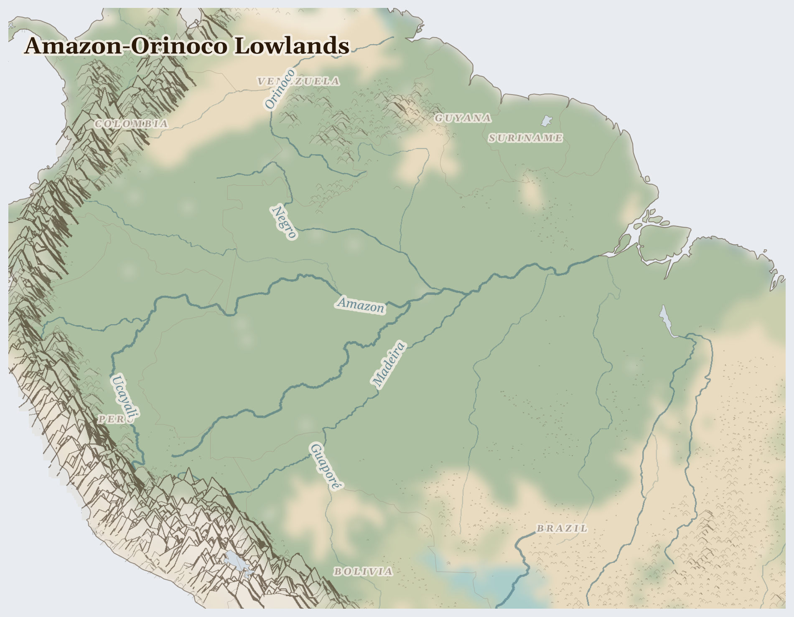

Amazon-Orinoco Lowlands
Suriname, Venezuela, Colombia and 5 more countries
Neotropic
The biggest rainforest on Earth, wrapped around the biggest river on Earth. The Amazon holds more kinds of birds, fish, frogs, and trees than anywhere else — and it is home to hundreds of Indigenous peoples who know it best.
How Life Works Here
River boats are the buses here; villages sit on stilts by the water. People fish, gather açaí berries and Brazil nuts, and tend forest gardens. Far bigger machines are at work too: whole fields of soybeans and huge cattle ranches grow where forest used to be, sending food across the ocean to feed animals and people far away.
Ribeirinho fishing and farming communities, Indigenous communities managing fish stocks through seasonal agreements, Women processing and selling dried fish in riverine markets.
Indigenous communities practising shifting cultivation (hundreds of nations), Quilombo communities (descendants of escaped enslaved people) harvesting Brazil nuts and rubber, Açaí collectors in Pará …
small mines.
What Is Happening
The forest is being cut down, piece by piece, to make room for cattle, soy, and gold digging — and much of that happens on land that belongs to Indigenous peoples. When the forest goes, the animals go, and the rain changes. But the forest has fierce friends: Indigenous guardians patrol their own lands, and in Venezuela's cities, where money troubles made food scarce, millions of families have moved to neighbouring countries — and neighbours have taken them in.
Something Wonderful
The Amazon river carries so much water that far out at sea, sailors can scoop up fresh water from the ocean's surface. And every year, dust from the Sahara desert blows across the whole Atlantic to feed the forest with minerals. A desert feeds a rainforest!
Let's Do Something Together
What Is Inside a Phone?
Hold a phone or tablet (turned off!). Inside are tiny pieces of metal from deep underground — coltan, copper, gold, and lithium. These metals come from mines in countries where people sometimes have to fight over who gets to dig them up. Everything we use is connected to someone far away.
- old phone or tablet (for holding)
For grown-ups
Consumer electronics contain conflict minerals sourced from artisanal mines in crisis regions. Cobalt from DRC, tantalum from central Africa, and lithium from contested territories link everyday devices to displacement and exploitation.
Let Us Pray Together
God, help the people who find the metals we use every day.
Leader: We pray for the displaced. For the millions driven from their homes.
All: Lord, hear our prayer.
Leader: We pray for those living under violence. For communities enduring fighting in this region.
All: Lord, hear our prayer.
Leader: We pray for Colombia. Especially for Colombia, facing the most severe convergence of crises in this region.
All: Lord, hear our prayer.
Leader: We pray for the helpers. For humanitarian workers and missionaries in Amazon-Orinoco Lowlands.
All: Lord, hear our prayer.
O Lord, God of my salvation, I have cried out to you day and night. Let my prayer come into your presence; incline your ear to my cry.
Collect
O God, you declare your almighty power most chiefly in showing mercy and pity: mercifully grant to us such a measure of your grace, that we, running the way of your commandments, may receive your gracious promises, and be made partakers of your heavenly treasure; through Jesus Christ your Son our Lord, who is alive and reigns with you, in the unity of the Holy Spirit, one God, now and for ever.
Amen.
Talk About It
Indigenous children in the Amazon learn hundreds of plants and birds by name. How many trees or birds near your home can you name? Who could teach you more?
One Thing We Can Do
Brazil nuts only grow in wild rainforest — no plantation can grow them. If your family ever buys them, you are paying forest people to keep the forest standing. Say a prayer for the forest guardians tonight.